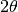
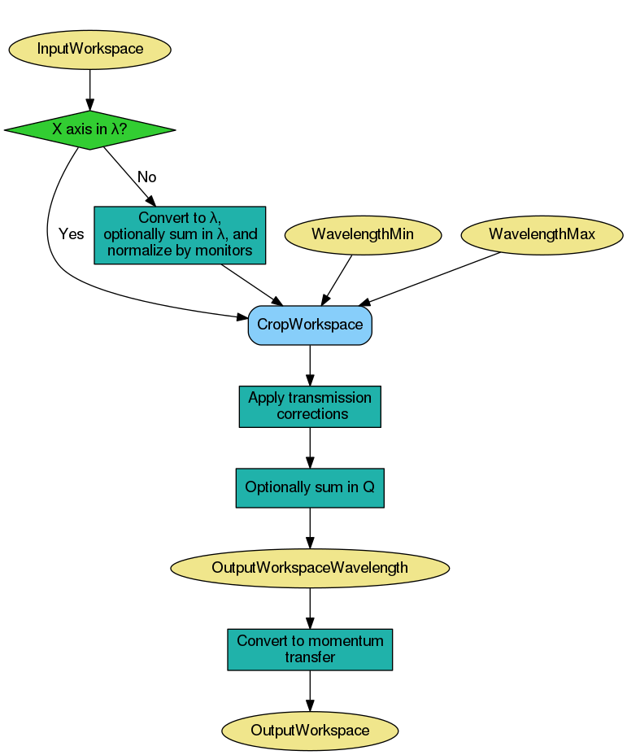

ReflectometryReductionOne dialog.
Table of Contents
Reduces a single TOF/Lambda reflectometry run into a mod Q vs I/I0 workspace. Performs monitor normalization and transmission corrections.
| Name | Direction | Type | Default | Description |
|---|---|---|---|---|
| InputWorkspace | Input | MatrixWorkspace | Mandatory | Run to reduce. |
| SummationType | Input | string | SumInLambda | The type of summation to perform. Allowed values: [‘SumInLambda’, ‘SumInQ’] |
| ReductionType | Input | string | Normal | The type of reduction to perform. Allowed values: [‘Normal’, ‘DivergentBeam’, ‘NonFlatSample’] |
| ThetaIn | Input | number | Optional | Angle in degrees |
| ProcessingInstructions | Input | string | Mandatory | Grouping pattern on workspace indexes to yield only the detectors of interest. See GroupDetectors for details. |
| WavelengthMin | Input | number | Mandatory | Wavelength minimum in angstroms |
| WavelengthMax | Input | number | Mandatory | Wavelength maximum in angstroms |
| RegionOfDirectBeam | Input | int list | Indices of the spectra a pair (lower, upper) that mark the ranges that correspond to the direct beam in multi-detector mode. | |
| I0MonitorIndex | Input | number | Optional | I0 monitor workspace index |
| MonitorBackgroundWavelengthMin | Input | number | Optional | Wavelength minimum for monitor background subtraction in angstroms. |
| MonitorBackgroundWavelengthMax | Input | number | Optional | Wavelength maximum for monitor background subtraction in angstroms. |
| MonitorIntegrationWavelengthMin | Input | number | Optional | Wavelength minimum for integration in angstroms. |
| MonitorIntegrationWavelengthMax | Input | number | Optional | Wavelength maximum for integration in angstroms. |
| NormalizeByIntegratedMonitors | Input | boolean | True | Normalize by dividing by the integrated monitors. |
| FirstTransmissionRun | Input | MatrixWorkspace | First transmission run, or the low wavelength transmission run if SecondTransmissionRun is also provided. | |
| SecondTransmissionRun | Input | MatrixWorkspace | Second, high wavelength transmission run. Optional. Causes the FirstTransmissionRun to be treated as the low wavelength transmission run. | |
| Params | Input | dbl list | A comma separated list of first bin boundary, width, last bin boundary. These parameters are used for stitching together transmission runs. Values are in wavelength (angstroms). This input is only needed if a SecondTransmission run is provided. | |
| StartOverlap | Input | number | Optional | Start wavelength for stitching transmission runs together. Only used if a second transmission run is provided. |
| EndOverlap | Input | number | Optional | End wavelength (angstroms) for stitching transmission runs together. Only used if a second transmission run is provided. |
| StrictSpectrumChecking | Input | boolean | True | Enforces spectrum number checking prior to normalization by transmission workspace. Applies to input workspace and transmission workspace. |
| CorrectionAlgorithm | Input | string | None | The type of correction to perform. Allowed values: [‘None’, ‘PolynomialCorrection’, ‘ExponentialCorrection’] |
| Polynomial | Input | dbl list | Coefficients to be passed to the PolynomialCorrection algorithm. | |
| C0 | Input | number | 0 | C0 value to be passed to the ExponentialCorrection algorithm. |
| C1 | Input | number | 0 | C1 value to be passed to the ExponentialCorrection algorithm. |
| OutputWorkspace | Output | MatrixWorkspace | Mandatory | Output Workspace IvsQ. |
| OutputWorkspaceWavelength | Output | MatrixWorkspace | Output Workspace IvsLam. Intermediate workspace. |
This algorithm is not meant to be used directly by users. Please see ReflectometryReductionOneAuto v2 which is a facade over this algorithm.
This algorithm reduces a single reflectometry run into a mod Q vs I/I0 workspace. The mandatory input properties, WavelengthMin, WavelengthMax and ProcessingInstructions, must be manually set by the user. In addition, for the algorithm to be able to convert from wavelength to momentum transfer correctly, instrument components, specially detectors, must be located at the correct positions. The expected experimental setup for the algorithm to produce correct results is shown below, where the angle between the beam direction and the sample-to-detector vector must be .

The figure below displays a high-level workflow diagram illustrating the main steps taking place in the reduction.
First, the algorithm checks the X units of the input workspace. If the input workspace is already in wavelength, summation and normalization by monitors and direct beam are not performed, as it is considered that the input run was already reduced using this algorithm.
If summation is to be done in wavelength, then this is done first. The the conversion to wavelength and normalisation by monitors and direct beam is done, followed by the transmission correction. Transmission correction is always done, even if the input was already in wavelength. The resulting workspace is cropped in wavelength according to WavelengthMin and WavelengthMax, which are both mandatory properties.
If summation is to be done in Q, this is done after the normalisations and cropping, but again, only if the original input was not already in wavelength.
Finally, the output workspace in wavelength is converted to momentum transfer (Q).
If the input workspace is in TOF, monitors are extracted using GroupDetectors v2 with RegionOfDirectBeam as input, and region of direct beam using CropWorkspace v1 with I0MonitorIndex as input. If summing in wavelength, detectors of interest are extracted and summed in TOF using GroupDetectors v2 with ProcessingInstructions as input. If summing in Q, summation is not done yet as it is done in a later step after all normalisations have been done.
Each of the resulting workspaces is converted to wavelength (note that AlignBins is set to True in all the three cases). Note that the normalization by a direct beam is optional, and only happens if RegionOfDirectBeam is provided. In the same way, monitor normalization is also optional, and only takes place if I0MonitorIndex, MonitorBackgroundWavelengthMin and MonitorBackgroundWavelengthMax are all specified.
Detectors can be normalized by integrated monitors by setting NormalizeByIntegratedMonitors to true, in which case MonitorIntegrationWavelengthMin and MonitorIntegrationWavelengthMax are used as the integration range. If monitors are not integrated, detectors are rebinned to monitors using RebinToWorkspace v1 so that the normalization by monitors can take place.
A summary of the steps is shown in the workflow diagram below. For the sake of clarity, all possible steps are illustrated, even if some of them are optional.

Transmission corrections can be optionally applied to the workspace resulting from the previous step. Transmission corrections can be either specified via transmission runs or specific correction algorithms.

When normalizing by transmission runs, i.e. when one or two transmission runs are given, the spectrum numbers in the transmission workspaces must be the same as those in the input run workspace. If spectrum numbers do not match, the algorithm will throw and exception and execution of the algorithm will be stopped. This behaviour can be optionally switched off by setting StrictSpectrumChecking to false, in which case a warning message will be shown instead.
When normalizing by transmission run, this algorithm will run CreateTransmissionWorkspace v2 as a child algorithm, with properties WavelengthMin, WavelengthMax, I0MonitorIndex, MonitorBackgroundWavelengthMin, MonitorBackgroundWavelengthMax, MonitorIntegrationWavelengthMin, MonitorIntegrationWavelengthMax, and ProcessingInstructions. In addition, when both FirstTransmissionRun and SecondTransmissionRun are provided the stitching parameters Params, as well as StartOverlap and EndOverlap will be used by CreateTransmissionWorkspace v2 to create the transmission workspace that will be used for the normalization.
If no transmission runs are provided, then algorithmic corrections can be performed instead by setting CorrectionAlgorithm to either PolynomialCorrection or ExponentialCorrection, the two possible types of corrections at the moment. If PolynomialCorrection, is selected, PolynomialCorrection v1 algorithm will be run, with this algorithm’s Polynomial property used as its Coefficients property. If the CorrectionAlgorithm property is set to ExponentialCorrection, then the ExponentialCorrection v1 algorithm is used, with C0 and C1 taken from the C0 and C1 properties.
If summing in Q, the summation is done now, after all normalisations and
cropping have been done. As with summation in  , the summation is
only done if the original workspace was not in (otherwise we
assume the reduction has already been done).
, the summation is
only done if the original workspace was not in (otherwise we
assume the reduction has already been done).
The summation is done using the algorithm proposed by Cubitt et al
(J. Appl. Crystallogr., 48 (6) (2015)). This involves a projection to an
arbitrary reference angle,  , with a “virtual” wavelength,
, with a “virtual” wavelength,
 . This is the wavelength the neutron would have had if it had
arrived at with the same momentum transfer
(
. This is the wavelength the neutron would have had if it had
arrived at with the same momentum transfer
( ). Counts are shared out proportionally into the output array in
and the projections from all pixels are summed in
.
). Counts are shared out proportionally into the output array in
and the projections from all pixels are summed in
.
The resulting 1D workspace in at becomes
the output workspace in wavelength.

Finally, the output workspace in wavelength is converted to momentum transfer
() using ConvertUnits v1. Note that the output workspace in Q
is therefore a workspace with native binning, and no rebin step is applied to
it.
If you wish to obtain a rebinned workspace in Q you should consider using algorithm ReflectometryReductionOneAuto v2 instead, which is a facade over this algorithm and has two extra steps (Rebin v1 and Scale v1) to produce an additional workspace in Q with specified binning and scale factor. Please refer to ReflectometryReductionOneAuto v2 for more information.
This is version 2 of the algorithm. For version 1, please see here.
Example - Reduce a run
run = Load(Filename='INTER00013460.nxs')
# Basic reduction with no transmission run
IvsQ, IvsLam = ReflectometryReductionOne(InputWorkspace=run,
WavelengthMin=1.0,
WavelengthMax=17.0,
ProcessingInstructions='3:4',
I0MonitorIndex=2,
MonitorBackgroundWavelengthMin=15.0,
MonitorBackgroundWavelengthMax=17.0,
MonitorIntegrationWavelengthMin=4.0,
MonitorIntegrationWavelengthMax=10.0)
print "%.4f" % (IvsLam.readY(0)[533])
print "%.4f" % (IvsLam.readY(0)[534])
print "%.4f" % (IvsQ.readY(0)[327])
print "%.4f" % (IvsQ.readY(0)[328])
Output:
0.0003
0.0003
0.0003
0.0003
Example - Reduce a run and normalize by transmission workspace
run = Load(Filename='INTER00013460.nxs')
trans1 = Load(Filename='INTER00013463.nxs')
trans2 = Load(Filename='INTER00013464.nxs')
# Basic reduction with two transmission runs
IvsQ, IvsLam = ReflectometryReductionOne(InputWorkspace=run,
WavelengthMin=1.0,
WavelengthMax=17.0,
ProcessingInstructions='3-4',
I0MonitorIndex=2,
MonitorBackgroundWavelengthMin=15.0,
MonitorBackgroundWavelengthMax=17.0,
MonitorIntegrationWavelengthMin=4.0,
MonitorIntegrationWavelengthMax=10.0,
FirstTransmissionRun=trans1,
SecondTransmissionRun=trans2)
print "%.4f" % (IvsLam.readY(0)[480])
print "%.4f" % (IvsLam.readY(0)[481])
print "%.4f" % (IvsQ.readY(0)[107])
print "%.4f" % (IvsQ.readY(0)[108])
Output:
0.4592
0.4654
0.7278
1.0305
Categories: Algorithms | Reflectometry
{kind=link}